3.1 Script para ambiente gráfico
El script desarrollado automatiza el proceso de creación de una copia de seguridad de la carpeta Documentos del usuario. Cuando es ejecutado desde el entorno gráfico, genera automáticamente un archivo comprimido (.tar.gz) dentro de una carpeta llamada Backups, preservando la fecha y hora para organizar los respaldos.
1.Crear archivo.sh
Antes de hacer el scrip hay que crear el archivo.sh. En tu consola escribe el siguiente comando: nano backup_docs.sh .Esto creara el archivo abriria directamente el editor de texto nano en el que podremos empezar a escribir el script.
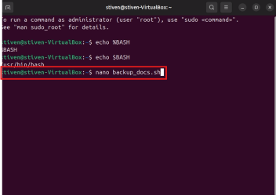Después de haber booteado el equipo con el dispositivo en el que hayas descargado la iso, te aparecerá la interfaz de arriba. A continuación, elegiremos la opción “Try or install ubuntu”.
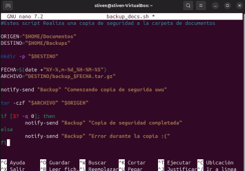2.crear el ejecutable
Ya creado el script, hay que crear el ejecutable para poder utilizar lo de manera sencilla. La siguiente imagen muestra la creacion de la carpeta aplications (esto es por si aún no la tienes)
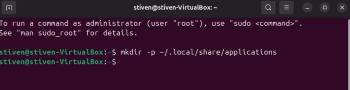Ahora el siguiente paso es crear el archivo.desktop (ejecutable). Escribe el siguiente comando: nano ~/.local/share/applications/backup_docs.desktop
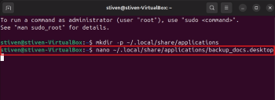Esto abrirá nuevamente el edito nano para poder configurar el archivo como aparece en la siguiente imagen.
Para guardar y salir en nano escribe la combinación de teclas: Ctrl + o y Enter y luego Ctrl + x
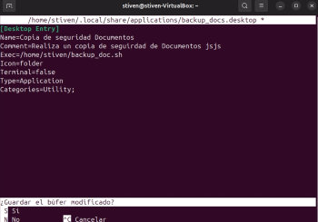A continuación, se anexa el link para los archivos del script y el video que muestra el script en acción: Link
3.2 Script de automatización en entorno consola
En este punto se anexará los pasos que se llevaron a cabo para la elaboración del script en consola.
3.Creación del código
Al igual que en el ambiente gráfico, tiene que crear un archivo.sh para poder escribir el script en el. Escribe el siguiente comando: nano backup_cli.sh
La siguiente imagen solo ejemplifica una parte del código. más adelante se anexara el link con los archivos y los videos del script funcionando
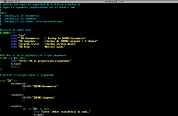Luego de escribir todo el código, asegúrate de guardarlo con Ctrl + o y Enter, y luego, Ctrl + x.
La siguiente imagen muestra un pequeño ejemplo del script en funcionamiento
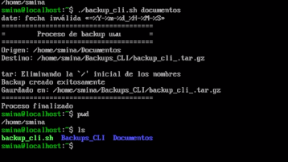A continuación, se anexa el link a los archivos y videos del punto en especifico Link
3.3 Gestión de procesos en Linux
En este punto se anexar la lista de comando que se utilizo para visualización, gestión y Prioridades de procesos:
1. procesos
-ps aux
El siguiente comando muestra una lista de todos los procesos que se encuentran en la tabla de procesos, pero de forma estática (No se actualiza instantáneamente)
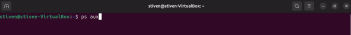La siguiente imagen muestra los procesos en la tabla de procesos junto con sus propiedades.
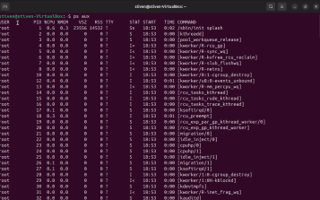-top
El comando “top” también muestra los procesos en las tablas de procesos y una serie de información adicional. A diferencia de "ps aux” Top si va actualizando la tabla de procesos cada cierto tiempo.
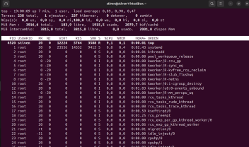-htop
Htop es un paquete que permite ver los procesos en la tabla de procesos y poder gestionarlos fácilmente.
Para instalarlo escribe el comando: sudo dnf isntall htop
Y para ejecutarlo simplemente escribe el comando: htop
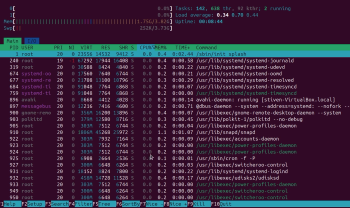-pstree
“pstree” es un comando que muestra los procesos en forma de árbol. Para ejecutarlo escribe el comando: pstree –p
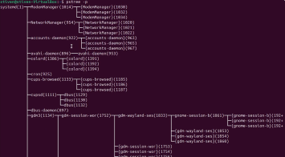2. Gestión
-psgrep
“psgrep" es comando que te enseña el PID (Process ID) de un proceso en especifico
Para ejecutar el comando escribe: psgre “nombre de proceso”
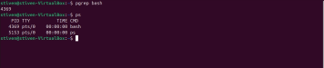-Kill
Kill es un comando que sirve para terminar con procesos; tiene diferentes formas de usarse. Para este ejemplo anexaremos el comando: killall “Nombre del proceso”, el cual se encarga de terminar con todos los procesos que tengas ese nombre en común
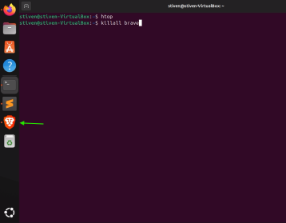En esta imagen se puede observar cómo cuando se ejecuta el proceso, el icono del navegador desaparece, puesto que todos los procesos con ese nombre se pararon.
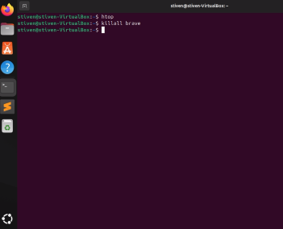3. Prioridades
-nice & renice
Ambos comandos trabajan sobre las prioridades de los procesos. Mientras que nice sirve para asignar una prioridad específica a procesos que vayan a iniciarm, renice sirve para cambiar la prioridad de procesos ya existentes.
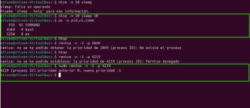A continuación, se anexarán un documento con la explicación de los comandos de manera más detallada: link
3.4 Programación básica con hilos en Java
En este punto se va a anexar el código fuente del programa desarrollado en java que simula utilización de hilos en java
1. Concurrencia con hilos
Este programa crea tres hilos que comparten un mismo objeto Contador y realizan incrementos simultáneos sobre él. Para evitar condiciones de carrera se utiliza el método synchronized en incrementar(), garantizando que solo un hilo puede modificar el contador a la vez. Sin esta sincronización, los hilos podrían interferir entre sí y producir un valor final incorrecto. Al final, el programa muestra el valor total incrementado, demostrando una ejecución concurrente segura.
a siguiente imagen muestra un pequeño ejemplo del codigo realizado.
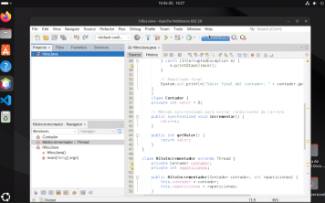Esta imagen muestra el proyecto ya construido para su ejecución.
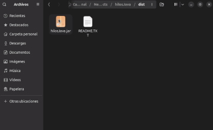A continuación, se anexa el link que lleva al codigo fuente del programa realizado en el punto 3.4: Link